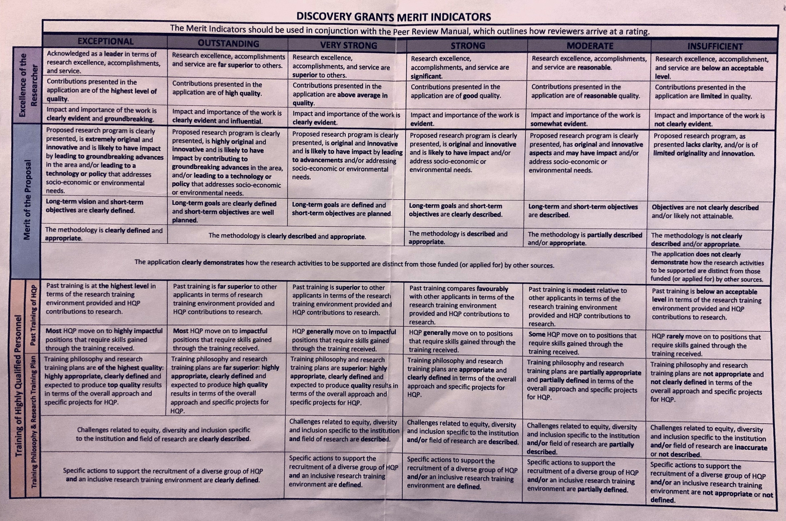

What evaluating Discovery Grants for the last three years has taught me
For the last three years I have been a member of NSERC’s Discovery Grant Evaluation Group for Ecology and Evolution (that’s 1503 in NSERC-speak). In that time I’ve evaluated over 130 Discovery Grant submissions, read the same number of Canadian CCVs, and even chaired a few evaluations. This is what I learned, through this process, about writing a successful Discovery Grant.
Discovery Grants (hereafter DGs) are an odd fish; they’re programme grants, not projects, intended to fund the next five years of an applicant’s research programme in the natural sciences or engineering. They are framed around a few short-term objectives against which streams of activity are proposed to address the long-term goals of the research programme. They describe activities that will be completed by Highly Qualified Personal (HQP) — NSERC speak for basically anyone that receives training from the applicant that isn’t leading their own research programme — and the environment in which and philosophy by which that training will take place. Finally, DGs have relatively high success rates — around 60% depending on what group of applicants you fall into — but are typically of low monetary amounts1, and as such applicants will rarely get anywhere near the amount of money they request for the proposed work that is budgeted for in the proposal.
DGs are evaluated on three key components:
- Excellence of the Researcher (EoR) — how highly is the applicant rated in terms of research excellence, accomplishments, and service?
- Merit of the Proposal (MoP) — how well is the applicant’s proposed programme of work evaluated?, and
- Training of HQP (confusingly just HQP) — how highly is the past training record and proposed training plan philosophy rated?
Each of these components is assigned a rating (from highest to lowest)
- Exceptional
- Outstanding
- Very Strong
- Strong
- Moderate
- Insufficient
Each rating is described by the Merit Indicators in what NSERC and Evaluation Group members all call “The Grid”. The Grid itself is a single sheet of paper with brief descriptions of what the Evaluation Group is looking for to assign a proposal to each rating for each of the three components described above. The Grid is supported by the Peer Review Manual, which has fuller descriptions of what Evaluation Group members are looking for when they assign ratings.

The Grid and the merit indicators are exceptionally important in evaluating DGs. They ensure that all applicants are treated fairly and objectively in the same way. They focus Evaluation Group member’s assessments on the criteria that NSERC are interested in, not each member’s individual criteria for what makes a good proposal.
How we practically assess Discovery Grants
If you are familiar with the conference panel review system NSERC uses to evaluate DGs, you might want to skip this next section and jump to the part where I explain what we, as Evaluation Group members, are looking in a good DG.
Typically, each DG is read by five members of the Evaluation Group — known as the Readers — each of whom will ultimately provide ratings for the three assessed components. The final rating for each component is the median of the ratings from the five Readers and this final rating determines which funding bin the DG application ends up in. Evaluation Group members don’t decide how much money each DG is awarded; the dollar amounts attached to each bin are ultimately determined by the NSERC staff in the weeks after the Evaluation Group has concluded it’s activities, and depend on the available budget for each Evaluation Group.
The actual evaluation of each DG takes place during a single week in the middle of February2. For 1503, we had three rooms running almost continually from 0830 to 1700 each day in which the five readers for each DG would spend 15 minutes discussing the merits of each application before voting their final ratings. Each room has a Chair — an Evaluation Group member who oversees each DG evaluation and facilitates the discussion — and an NSERC Programme Officer — who oversees the process and provides input on areas of procedure and policy and keeps the whole process on track. The Chair and the Programme Officer are there to ensure that all DGs are treated the same way; 15 mins for discussion, evaluated in terms of the The Grid, etc. From time to time, other Programme Officers, Team Leads, and other NSERC staff that oversee the different Evaluation Groups, and the overall Chair for 1503 would sit in on evaluations for periods of time to ensure fairness across the three 1503 rooms and across the the various Evaluation Groups.
The actual evaluation is a pretty frenetic affair. At the start of the 15 minute evaluation the name of the applicant is announced and the Chair asks if there are any Delays — valid delays to an applicant’s activities such as parental leave, illness, caring for a dependent, etc are taken into account when assessing EoR — and any nomination for a DAS (Discovery Accelerator Supplement). I won’t discuss DAS nominations here, but if there is a nomination the five Readers also need to discuss and vote on the DAS nomination within the 15 minute evaluation period; knowing that there is a nomination upfront ensures that the Chair leaves enough time for these additional deliberations.
Next each Reader, in turn, gives their preliminary ratings for the three components. Then the first Reader (R1) has 4–5 minutes to justify their ratings. R1 will typically hit upon the main evidence supporting their evaluation and hence has a little longer to make their case. Then R2 has a couple of minutes to explain their scores; R2 will typically focus on areas where they might differ from R1 in terms of their rating, or provide examples of additional factors justifying their own rating if they agree with R1. Usually, the Chair will then briefly intercede, identifying areas of disagreement in the preliminary ratings so that R3, R4, and R5 can focus their brief comments (typically just a minute or 90 seconds each) on any areas of disagreement.
Once each Reader has given their comments and justification, the remaining time is given over to discussing areas where the Readers might disagree on the ratings. The aim here is not to come to consensus across the five Readers, but to ensure that sufficient consideration is given to differences of opinion among the Readers. Throughout, the room Chair will be making notes and will facilitate the discussion by referring the Readers to The Grid, trying to focus attention on the specific merit indicators based on their interpretation of the language being used by the Readers. The room Chair also ensures that each Reader has a chance to speak or comment so that everyone’s voice is heard. Once we hit 13 or 14 mins, the room Chair will bring the discussion to a close and ask the Readers to vote.
Voting is done on one of about eight laptops arranged around the room, and proceeds in private and anonymously; a Reader is not required to stick to their preliminary ratings, but is free to do so if they wish and nobody, not even the Programme Officer, knows the way an individual Reader ultimately votes3. Once all the ratings have been entered, the final score (Outstanding-Strong-Strong for example for EoR-MoP-HQP) is announced by the Programme Officer. If needed, a few house-keeping activities are attended to (such as Messages to Applicants for anyone in receipt of a rating of Moderate or Insufficient on one or more component). Then the whole process starts again for the next applicant, often with one or more Readers changing up and often moving between rooms. If there is a DAS nomination, the whole evaluation described above takes place in about 11 or 12 minutes, leaving a couple of minutes for the DAS discussion and voting before the evaluation concludes.
What makes a good Discovery Grant?
Fifteen minutes doesn’t sound like a lot of time to evaluate a proposal, even one as short as a DG. It isn’t, but each Evaluation Group member will have spent the previous two months reading each of the DGs they were assigned (I had about 45 DGs to evaluate this year (2020), 4 of which were for other EGs), preparing notes to support their assessments, as well as taking part in calibration exercises. The aim of the 15 minute evaluation is to provide time for Readers to justify their ratings and consider the input of the other Readers before giving their final ratings. So, during the preceding two months, what were Readers looking for when evaluating a DG?
The advice below is just that; my advice. Nothing here is official NSERC policy or guidance. Treat what I write below accordingly…
Excellence of the Researcher
Here, Evaluation Group members are looking at the applicant and their research and service activities, plus their recognitions and accomplishments.
Readers are looking at inter alia
- the publication record of the applicant; what papers the applicant has published, where, and what impact they had,
- where the applicant has presented their work, to whom? Was it an invited talk or a keynote?
- whether the applicant is on the editorial boards of any journals, or served on committees or served scholarly societies, organized conferences or conference sessions, workshops, or served as expert witnesses,
- whether the applicant has received any recognitions, awards, etc,
- the funding record of the applicant
- etc.
We’re not bean-counting here; while a lot of this information is gleaned from the Canadian Common CV (CCCV), we’re trying to evaluate the quality of research outputs, not the quantity, plus the quality of the service to the research community. In this regard, the applicant can help their Readers by highlighting important outcomes of the applicant’s work and providing evidence for impact in the Most Significant Contributions section of the the proposal. Most importantly, your Readers need evidence of the excellence or impact of your contributions; if you only quote bibliometric data at us, we aren’t going to be able to weigh that properly as evidence. Citation rates vary from (sub-)field to (sub-)field and your Readers are not all going to be familiar with the field in which you work. Help them understand how great you are by giving specific examples of impact; if your paper has influenced researchers in broader fields, tell us; if your work led to a new paradigm, explain how; if your work resulted in actionable conservation management outcomes, point out where; if a contribution led to a new collaboration, invitation to give a talk, or join a committee or working group, point this out.
Readers are not just looking at research activities; service to the research community is equally important so tell your Readers about the societues you serve, the committees you joined, the activities your organized or contributed toward.
When completing your Most Significant Contributions section, bear in mind that you don’t have to give five contributions, that’s just the maximum. If you have three themes to your contributions, present this information as three groups of papers/contributions and use the space you’re given accordingly.
As Evaluation Group members, we’re conscious that author order norms are not consistent across disciplines, and that many applicants will have publication records that reflect a high degree of collaboration in their research programme. This is fine and we really do want to give you credit for your contributions, but you need to explain this to us; Evaluation Group members are not allowed to give people the benefit of the doubt about researcher contributions. If you are regularly in the middle of many authors on your papers, or routinely don’t take the senior/first author position, then tell us why and explain your contributions to these papers, otherwise we have no evidence you’re leading research or what your contribution was.
You give this extra background information in the Additional Information on Contributions section of the proposal. Use this section, giving specific examples (you can reference your CCCV papers by number, e.g. [1] or [J1] [C2] if you have papers and book chapters for example, in this section, but include a note to say what your system is so your readers know) to provide additional information on where you publish papers and why, and what your contributions were where it is not clear from typical norms (First/last author for example). You don’t have a lot of space in this section so use it well; assume your Readers know nothing about you and what author order means in terms of your contributions.
Merit of the Proposal
In my experience this is the area where many applicants do themselves few favours.
It is important to realize that some — if not most — of your Readers are not going to be subject-matter experts in the area you are writing your proposal on. All your Readers will however know what constitutes good research design, clear exposition, etc. Write your proposal section with this in mind; you’re writing for researchers but not necessarily someone in your specific sub-field of ecology or evolution.
Write clearly and concisely; use your space well.
Readers are looking for four main things. First, we’re evaluating whether the research you propose is original and innovative and what we anticipate the impact on the applicant’s (sub-)field will be. There’s even a section where you can address impact that you’re asked to add (usually at the end of the Proposal section). Don’t oversell the impact of your work; not everything is going to be paradigm changing, but you can help yourself by clearly articulating what you anticipate the impact of this work will be and why.
Second, we’re looking to see if you have described the long-term goal of your research programme; this is the thing you envision working toward over two or more DG rounds. Readers will also be looking to see if your short-term objectives are given, feasible, and how well they mesh with the long-term goal.
Short-term objectives are the things you will work on in this DG proposal. As such, Readers need to understand how the objectives will help you make progress in achieving the long-term goal of your programme. We need to see that these objectives are not just clearly described but are planned and well defined. This is where good grant writing can help; the more clearly you articulate what the short-term objective are and how you intend to achieve them, the more highly you can score on MoP. What theoretical framework are you working under or plan to develop? What are the specific hypotheses you will test? Tie this back into the impact section so we can understand how attaining your objectives will lead to impact and advances in your field/area.
The third thing we’re looking for is how well the methods you propose to use will enable you to tackle the objectives. If you are doing experiments, tell me how many samples you’ll collect, how many replicates (please don’t just say n=3 and be done with it), what treatment levels you’ll use and why those levels. If you’re doing observational work, tell me why you want to work where you propose to work, what the pressure gradient is and how you’ll measure the pressure. If you’re working with species, why those species and not others? Why this system? Why are you using this method over competing methods? How will you analyse your data? (Don’t just rattle off a list of stats methods you’ll apply!)
Think about the appropriateness of the techniques you plan to use because you will have Readers who are familiar with the methods and who will call you out if they are inappropriate or call into question whether you can achieve your objectives.
Detail helps, but it has to be balanced with the needs of other areas of the Proposal section. Use detail where needed to hit the Merit Indicators; methods should be clearly described (or clearly defined for Exceptional) and appropriate according to the grid. Try to think about what a non-expert might need to read in order to assess this.
The fourth main area is easy to resolve and doesn’t cost you any space in the Proposal section; you can’t get money from two or more sources for doing the same thing. The emphasis is on you, the applicant, to explain how what you’re asking for in the DG is distinct from other funding sources you hold or have applied for. There is a separate section, Relationship to Other Research Support, where you write to each of the grants in progress on your CCCV and explain how they differ from what you propose to do in the DG. If there is overlap explain how and demonstrated why you’re not asking for those funds; if you have funding from elsewhere to collect some data that you’ll use in support of an activity in the DG, then explain this. Perhaps you have funding for 50 samples but your DG requires 200; state you are asking for an additional 150 samples in the DG — and why you need these additional samples — and only budget for 150 in the Budget Justification section. All of this also applies to funding you have applied for but, at the time of submitting your DG application, you don’t have a decision on.
If you are holding or applying for CIHR or SSHRC grants you must declare this — there’s now a box to tick to indicate that you have or have applied for such funding — and include the required budgetary details and descriptions of the grants. If you check the button, the Research Portal shouldn’t let you submit your DG without attaching the relevant information to your DG application. Check the instructions!
This is an incredibly important point. This is one of the few areas of the evaluation where Readers can instantly decide the entire MoP rates Insufficient (and effectively scupper your grant) regardless of how groundbreaking your work proposed research will be. If there’s uncertainty, you can be sure Readers will spot it and question it, usually ahead of time so that other NSERC people can be in the room to advise the Readers in their discussions. You really don’t want your Readers debating funding overlap instead of the cool science you propose to do — take the time get this right and don’t just say there’s no overlap, explain why there isn’t!
As we’re evaluating the MoP, Readers will be looking for where the HQP you propose to train will fit in to the programme. Think carefully about the feasibility and appropriateness of the activities or projects you assign to particular HQP. If you propose to do something that requires a PhD student, don’t allocate it to an Honours student!
Here are a few more tips for things to do or avoid when writing your Proposal section:
- Don’t repeat verbatim things in the Recent Progress section that you’ve already covered in the Most Significant Contributions. Make reference to the other section as needed.
- Don’t spend too much space on the literature review; Readers and external reviewers will spot if you haven’t included recent research or ideas, but we don’t need page after page of review — in the proposal section we’re evaluating what you plan to do not what you or someone else already did.
- Clearly identify which HQP will do which activities. Try your hardest to simplify the way you refer to projects and HQP. Readers are going to have a hard time if you have Project 1a ii) assigned to MSc4, PhD1, and BSc4–10 — what was Project 1a ii) again? And what are those BSc people doing, and how are MSc4’s and PhD1’s contributions different?
- Do use a figure or table if it helps articulate aspects of the proposed research.
- Use a number citation system like that used in a Science or Nature paper, it will save you a lot of space in your 5-page limit to the proposal.
- You can save space on references by referring to your CCCV publications by number and only include those extra references that aren’t on the CCCV on the reference list you can supply. A common technique is to state early on that refs 1–33 refer to your CCCV and 34+ are listed on the references page, for example.
- Don’t think you need to have loads of objectives and many projects under each objective — successful proposals can have just a couple of objectives with a couple of well-described described projects assigned to each. Sometimes less really is more.
Training of Highly Qualified Personnel
NSERC, like the other Tri-Agencies, is invested in training highly qualified people and a successful DG application will have to hit a number of criteria to do well on the rating.
There are two areas that Readers consider here;
- the applicant’s past track record of training HQP, and
- the applicant’s training philosophy and training plan
The past track record speaks to previous HQP that you have trained and the extent to which those HQP have moved on to successful positions that use the skills they learned. Again, this is not a numbers game and quality trumps quantity, but you do need to demonstrate a track record. If you are early in your career and don’t have much of record, be honest and include what you have, including current trainees, on the CCCV. In the Past Contributions to HQP Training you can explain your training record and point out if you have some past experience, perhaps informally as a post-doc; but remember the mantra and show us the evidence.
In your CCCV do indicate where your listed HQP are now and what they are doing. You can also discuss this in the Past Contributions to HQP Training section, highlighting particular past trainees, perhaps to indicate if those trainees got awards or prestigious scholarships. If a trainee withdraws from their programme, don’t leave it up to the Reader to infer why, tell us. This section is also a good place to indicate if HQP are publishing and to highlight HQP contributions to those publications on your CCCV. Also give numbers of presentations given by HQP and perhaps highlight an important talk that they gave or a best talk or poster award they may have received.
Your past contributions are also assessed in terms of the training environment you provide to HQP; exactly where in the various sections on philosophy, training plans, and past contributions to HQP you put this is up to you, but do describe the environment in which your HQP training takes place and what facilities and opportunities are afforded to HQP that you train. If there is a particularly innovative course or workshop run at your institution, tell you Readers about it.
The other half of the rating for HQP is based upon your approach to training (your Training Philosophy) and the training plans for individual HQP. I’ve already mentioned that it is important to clearly indicate which trainees are doing which aspects of the proposed research, and that you need to assign HQP to appropriate tasks given their career stage. This is where a clear Proposal section that ties in nicely to your HQP Training Plan section can really help you. Don’t duplicate extensive information in more than one section, but do refer between the Proposal and the HQP Training Plan sections.
The training plans should also include information about how you actively train HQP in the various lab, field, taxonomic, soft, and transferable skills appropriate to your lab or setting. Do you teach data analysis, or science communication? Do you have lab meetings and how often? Here’s were you describe these more generic items that cut across multiple HQP trainees. You need to have information on the individual training plans for specific HQP (this include the projects they’ll do in the Proposal) as well as on these more general skills.
Your Training Philosophy refers to your approach to HQP training. Are you hands-on or do you favour a looser working relationship with your HQP? Do you prefer a small lab or a larger lab of trainees? And how do you manage that; do you have senior HQP (PDFs) helping to train more junior members for example?
Everyone holds lab meetings, helps their HQP publish, and sends HQP to conferences so that they may present their research. What is it that you do that is unique or different?
The final component of the HQP section is the EDI (Equity, Diversity, Inclusion) statement, which is new this year as a requirement. It forms part of the training philosophy and training plan half of the HQP rating.
What are Readers looking for on EDI? First we are asked to look for some indication that the applicant understands what the barriers to entry and challenges in recruitment are for underrepresented groups in the applicant’s particular field of research and at the applicant’s institution. Again, provide evidence to support your assertions; reach out to your Faculty, Research Office, or EDI person/office at your institution to get specific information on challenges at your institution, and consult the literature or relevant scholarly societies for evidence to support your statement regarding your field of research.
Secondly, Readers will be looking for specific actions or activities that you have done, and or will do, to support recruitment of underrepresented groups to your lab and to provide all HQP that you supervise with an inclusive environment for their training. As always, give evidence and be specific, providing detail. Have you taken unconscious bias training? Are HQP positions advertised broadly with specific attempts to advertise via outlets that specialize in or cater to particular groups? Do you have a Code of Conduct for your lab?
In 2019 NSERC asked for the EDI statement to be included in the proposal though they didn’t require it and many people didn’t include anything on EDI in their DG application. This year it is a requirement and there are specific sections on The Grid that Readers can use to evaluate it. It’s a soft requirement though; you don’t need to include it, but if you don’t you’ll get an Insufficient rating for that element of the Training Philosophy and Research Training Plan component of the overall HQP rating. That usually won’t be enough to pull an applicant down one entire bin (i.e. if everything else had you at a solid Strong for HQP then all else equal the missing EDI statement shouldn’t pull you down to Moderate) and also isn’t sufficient to render an overall rating of Insufficient for HQP either. Where it can make a difference is if you are borderline for a particular rating — a low Strong rating could be pulled down to a Moderate of all or parts of the EDI criteria are missing, while a high Very Strong could get pulled up to an Outstanding rating if the applicant does a good job with the EDI statement.
Early career researchers and HQP
A note on ECRs; as Readers, we aren’t supposed to consider any element of the DG evaluation in terms of the applicant’s career stage. This may seem to be unfair to ECRs, as how could they possibly have any track record of training HQP if they are just starting out in their first academic position4. Well, it is unfair and NSERC recognizes this.
It is not uncommon for a ECR to warrant a rating of Insufficient for their record of past HQP training. However, as long as an ECR provides a good training plan and training philosophy section, this will be enough to pull them up to a Moderate rating overall for HQP. For ECRs only NSERC will fund down to the Strong-Strong-Moderate bin; assuming they rated well on their EoR and MoP sections an ECR will not be unfairly treated by a non-existent or relatively poor HQP track record.
Furthermore, currently NSERC gives ECRs that receive funding an extra $5,000 per year plus a one-time amount (the value of which I can’t quite recall just now) to help kick-start their DG careers, plus the option of a sixth year of funding at their level if they wish.
Other tips for preparing a good HQP section:
- Do follow the instructions and indicate HQP co-authors with a
*on the CCCV. - The only presentations you should list on the CCCV are the ones where you were the presenting author.
- Do not list presentations given by HQP as presenting authors on your CCCV, but do indicate if they are co-authors on any of the talks you presented, again with an
* - Don’t use Academic Advisor for HQP to pad your numbers. If you do have a number of trainees where your supervision was not a strict Primary- or Co-supervision role, then you can use this Academic Advisor role but you must do a good job of explaining your role in the training of those HQP and what particular skills or training you contributed yourself. Don’t use this as a way to add HQP to your CCCV where you were on a supervisory committee without justifying this and giving evidence of your contributions as we all sit on graduate committees. If you went above and beyond as a committee member, then this might be a good reason to include that HQP on your CCCV, but you will need to clearly explain why your supervision was important.
- It’s OK to not have identified HQP by name in the Proposal or HQP Training Plan sections, but do be clear when you refer to particular HQP so Readers can clearly identify who is doing what; use PhD1, MSc2 etc. instead.
- Training is valued at all levels; it doesn’t matter if you haven’t trained any PhDs or MScs as particular departments and programmes do not offer graduate degrees. NSERC is fair to all institutions and rewards training activities at all levels.
Random stuff
I’ve tried to outline above some of the key areas where DG applicants succeeded or rated poorly over the 130 odd DGs that I evaluated over the past three years. Bear in mind that I’m writing this just after the 2020 competition evaluations; NSERC my change the requirements and instructions in future years, so do confirm details with the NSERC website if you’re submitting in November 2020 or later.
Here are a few general points that apply broadly when preparing your DG application:
Read the instructions! These are currently provided in a poor format on the NSERC website. Do print out the Instructions for Completing and Application web page for the DG programme and highlight any specific instructions as they’re often buried in the narrative text. Then be sure to revisit your highlights to ensure that are doing what NSERC has requested of you.
Print out The Grid and refer to it often when preparing your DG application. Write your proposal to The Grid; the terminology might be obtuse and the differences between ratings obscure, but if it asks for things to be evident to get a Strong or clearly evident to get a Very Strong, make sure a reasonable Reader will think you provided clear evidence for a given indicator.
Read the Peer Review Manual; it’s tedious but it will help you prepare a DG application that is ready for Reader scrutiny if you take into account what it is that your Readers are required to do to assess your application. In particular, read the sections on the Merit Indicators as they provide more detail and nuance to the statements on the The Grid.
The CCCV software is appalling and it takes a long time to prepare a good CCCV for NSERC DGs. Start early and complete it fully, taking into account specific instructions NSERC provides to you.
There are things that you might have included on your generic CCCV that come through to your NSERC one that aren’t needed; don’t delete these, just print off the final version and then go through and see if everything that is shown needs to be there and if it doesn’t need to, exclude it in the NSERC version (you can un-check any individual entry of the CCCV to stop it being included on the NSERC Researcher CCCV). Examples of this might be extensive Journal Reviewer information; all DG applications review for journals so you might not want to include a detailed list of reviewing activities which might obscure more senior or important contributions such as reviewing for funding bodies or being on the editorial board of a journal.
Ask other researchers at your institution and colleagues at other institutions to read your DG application and give you feedback. Also get someone in your Research Office who is responsible for NSERC grants to read through and give you advice.
Your DG application is primarily evaluated by your five Readers. Those Readers will take into account the external reviews of your application, but your ratings will be primarily based on the Readers’ evaluations. Don’t be surprised if your final ratings don’t mesh with the comments from the overly enthusiastic reviewer, who may not be as familiar with The Grid and the Merit Indicators as your Readers.
Final thoughts
What struck me most — besides the general excellence of the applicants that I evaluated — is just how much care has gone into ensuring that the process is fair to everyone. As an applicant, your grant is evaluated by five careful and knowledgeable Readers plus at least one external reviewer. The NSERC Programme Officers and other staff are exceptional and take pride in running a process that is fair to everyone given the policy restrictions in play. NSERC DGs value so much more than how many Nature or Science papers you have and how many HQP you’ve trained. We might disagree over the extent to which the quality of other people, which is beyond the scope of the applicant’s ability to affect, contributes to the rating for an individual grant, but given the policies that NSERC has pursued, everything that I have witnessed during my time on EG 1503 assures me that this is fair and inclusive process, rewarding a great many excellent researchers in Canada.
If you have questions about anything I have written above, please ask in the comments below or drop me an email; I’ll do my best to answer them. Also, nothing I wrote above is official NSERC policy; these comments are mine and mine alone, but they do reflect what I have observed and learned in evaluating many DGs these past few years.
Footnotes
By way of example, my current DG is $29,000 a year for five years, which includes a top-up as I was an Early Career Researcher (ECR) when I applied, and the top amount possible in 1503 is in the region of $170,000 a year if you can attain the top bin of Exceptional-Exceptional-Exceptional.↩︎
For 1503 and a number of Evaluation Groups; other Evaluation Groups meet at different times in February. 1506 (Geoscience) met in the first week of February, and 1507 (Computer Science) met the second week of February, for example.↩︎
The Programme Officer knows the breakdown of the individual ratings but not the identity of who voted what.↩︎
ECRs are currently defined as being within five years of their first NSERC eligible position.↩︎